1.0.列子统计单词数 （单机版的）.................................................................... 34
1.-过滤一dfs开头的单词 （第二个案例）......................................................... 35
1.1配置伪分布式 ：..................................................................................... 37
1配置hadoop 的全分布式的应用配置..................................................................... 51
*.格式化 hdfs hadoop01上面 测试............................................................ 58
下面就是看人家写的starthadoop的内部代码.................................................... 66
2. Yarn 的工作流程： http://www.aboutyun.com/thread-8035-1-1.html................... 69
Day08 讲的一个操作文件上传下载的项目....................................................................... 83
1 mapreduce 的uber模式小作业模式....................................................................... 89
2.uber模式，（注意要先开启start-yarn.sh）..................................................... 89
5. 结束之后 大数据应该注意的............................................................................... 93
1 zookeeper的工作流程网站............................................................................ 103
2 高可用重新配置高可用的时候应该删除如下四个文件................................... 103
5 分发给小弟 mapreduce 与yarn 都不需要给小弟............................................. 107
1然后再hadoop01里面 配置 yarn-site.xml.................................................... 111
下午老师关了两个地方 最后老师又换回来了，不需要去修改了还是保持true....... 115
1 MapReduce (分布式并行离线计算框架)................................................................. 116
梁栋
Day03 2017.9.11 linux第三天
Tel:18101056806
Qq:41547287
Hadoop HDFS 分布式文件系统
MR 可能会被替代
Hive(hql)
Hbase(底层就是HDFS)
Scala 语言 Spark -->RDD（core）SparkSQL
Storm 面试会用，但大公司才用得起，（懂就行）
0.开始
1.1 shell 是用户与内核进行交互操作的一种接口，用c语言实现的，-java是c++。目前最流行的Shell 成为bash shell
Shell 是一门编程语言，解释行的语言python php javascript 不像java先编译，再运行，
每个命令都是一个关键字
一个系统可以存在多个shell，可以通过命令 cat /etc/shells 命令查看系统中安装的Shell
Sh 是nunx的解释器，bash是目前用得最多的，dash比bash的执行速度要快，但缺少很多功能
如下：
Dash比bash快，但是bash用的多目前，dash 功能比较少
全局变量，配好之后source 为了刷新吗？并不是
，接下来是个while循环
1解析文件
#！/bin/bash 表适用哪些编辑器
写完之后有哪些执行方法
用sh 解析，其实指向的就是bash 都可以不用权限也可以执行
Bash ***
Sh **.sh
2变量
Linx Shell 中的变量分为系统变量，和用户自定义变量，可以通过set命令查看系统变量
声明变量：通常用大写，
*等号左右不能有空格，
*首字母不能以数字开头，
*不能是关键字
取值时，变量两边的{}是为了便于解析，避免混淆调用变量时加的大括号
双引号和单引号的区别：
双引号会将两端的空格脱义
单引号不仅会将空格脱义，还会降变量引用，比如 $ARG脱义
变量前加关键字readonly 变为只读变量 ，final
Readonly B=”bbb” 或者 B=”bbb” readonly B
Unset 能删除普通变量，但是不能删除readonly‘变量’
Unset删除变量，只读变量无法删除，
反引号赋值，用 ` ` ,运行反引号里面的命令，并把结果返回
A=`ls -la ` 等价于 A=${ls -la }
然后 echo A
export A 把当前变量A提升为当前Shell进程中的全局环境变量，可供其他字shell程序使用
另一种方式：
如果在a.sh 脚本中用如下调用b.sh
../b.sh 或者 source ./b.sh ## 此时b.sh就在a.sh所在bash 进程空间中运行
特殊变量
$? :表示上一个命令退出的状态码（返回值），范围是0-127
|
返回0 表示正常，输出127 表示不正常
True 0 false 1 |

$$： 表示当前进程的编号 echo o
|
1.当前脚本的线程ID Echo $$ |
$0：当前脚本的名称 l例如：echo $0
$n :表示n位置的输入参数
|
1.第一个
调用↓
↓
|
$#：表示参数的个数，常用于循环
$*和$@ ：都表示参数列表
注： $* 与 $@ 区别
不被双引号包含时：
$* 和$@ 都以 $1 $2 ... $n 的形式组成参数列表
当他们被双引号包含的时候，
“$*” 会将所有参数作为一个整体，以 “$1$2$3...$n”的形式组成一个整体
“$@” 会将各个参数分开，以”$1” “$2” ... “$n” 的形式组成一个参数列表
直接定义赋值，注意不能有空格，
取值时，变量两边的{}是为了便于解析
练习：
把某一个目录下的一个文件拷贝到当前目录
Sh c.sh
i
字符串处理
获取字符串的长度 -变量前面加上
#
3.提取变量中的部分字符串：
${STR:4:3} # 数字4代表从下表4开始取，数字3代表取的个数
4 .查找字符串的位置:注意这里并不是从下表开始的，而是从1开始
echo `expr index "$STR" i` - 得到的位置不是下表，是从1开始的
3.数组
bash 值支持一维数组，不支持多维数组
没有限制数组的大小
元素下标0开始
方法一：元素下标由0开始：定义数组：数组名=(值1 值2 值3 ...值n)
方法二：可以单独定义数组的各个元素
arr[0] =value0
arr[1] =value1
arr[5] =value5
获取数组的长度：
echo ${#arr[@]}
Echo ${arr[*]} --输出数组所有值
2.
echo
3
4注释
Ssh里没有多行注释，只能每一行加一个#
多行注释：
方法一：
：’
语句1
语句2
‘
这两个是单引号
方法二:
:<<!
语句2
语句3
!
方法三:
If false; then
语句1
语句2
Fi
方法四:
把暂时不用的代码放到一个函数里面，不去调用它也会起到注释的作用
5运算符
运算符
算数运算符，
注意：在 相乘的时候需要吧* 转义 * -> \*
+ - * / = == !=
关系运算符
-eq (==) -gt (>) -ge (>=) -lt (<) -le (<=) -ne (!=)
注意： [] 里面不能用大于小于号，只能用命令
注意这里都必须要加上 空格，不能少，少了就错了 还有
还有 elif 下面也需要then
布尔运算符 ! (非) -o(或) -a (与)
！非运算，表达式为true ，则返回false 否则返回true
-o 或运算 ，有一个表达式返回true ，则返回true
-a 与运算 ， 两个表达式都为true ，才返回true
逻辑运算符 && ||
&&：相当于java中的 && 具有短路作用 ，一个为假就是假
|| :相当于java中的 || 一真则真，短路作用
字符串运算符 = != -z -n str
= 检测两个字符串是否相等,相等返回true
!= 检测字符串是否不相等，不相等则返回true
-z :检测字符串的长度是否为零，为0，返回true，
-n :检测字符串长度是否不为0 ，不位0返回true ，
str 检测字符串是否不为空，不为空则返回true
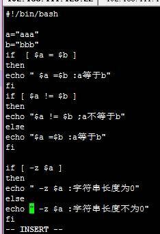
注意：echo 后面加一个空格
文件测试运算符 ：是用来检测文件的属性
-d : file 检测文件是否是目录
-f: file 检测文件是否是普通文件
-r: file检测文件是否可读
-w: file检测文件是否可写
-x:file检测文件是否可执行
-s: file检测文件是否为空（文件的大小是否大于0）
-echo: file检测文件或者目录是否存在
条件控制 :表达式两端必须要有空儿
If [ express ]
then
Command1
elif [express ]
Command2
Else
Command3
Fi
循环：for while
until
For var in item
item2 ... itemN
do
command1
command2
...
commandN
Done
例如：
穿件文件夹
这里不用转义
2.
while condition
Do
Command
Done
:

注意 ： for 后面的只能用 (())
，下面是错误的示范
这个是错误的
Until 循环
until命令和while命令类似
但区别是while循环再条件为针的时候继续执行循环
而until则在条件为假的时候执行循环
列子：
Case 匹配 ： 必须有in ,一个模式结束必须用双 ; ; 号，esac 作为整个case结束标识
Case 值 in 以前的事index
模式1）
Command
;;
模式2）
Command
;;
esac
以上循环都支持continue ，和break
案例：
原生bash是不支持简单的数学运算符的，可以借助其他的命令实现，例如 awk expr
expr是一个表达式计算工具,也是最常用在表达式求值用途中的
Val=` expr 3 + 2` ##用到反引号，表达式和运算符之间要有空格
就行了
6方法
[ function ] funcname [()]
{
Shell 语句
[return int ] -> 如果没有这一句的话，那么就是返回最有一行的值作为返回值
}
1.函数名前面可以带function 进行修饰，也可以不带。
2.可以带参数列表，如果没有参数，可以不带
3.可以显示的用return返回数值，如果不加return，将最后一行的命令的结果作为返回值
返回值的范围 0~255
注意：必须在调用函数之前先声明函数，因为shell是解释型语言，从上往下逐行的运行
获取参数的时候，参数大于等于十的情况下，需要加 {}
6.1跨脚本调用
在文本里面调用方法的时候 注意 有以下几种方法
Function test1(){}
//调用
trest1 -->这就算是一钟，后面不需要括号 直接函数名
Func_other 里面调用 func2.sh 需要给 func2.sh 加上权限
注意：
跨脚本调用是，注意调用另一个脚本里面的方法或变量时，需要用到source, 以及 . /*.sh 去运行
调试：
在可能出现错误的地方加上echo,查看打印结果
为了降低运行速度，可以加上sleep命令
sh -n ./test.sh 进行语法检测
Sh -x ./test.sh 进行普通测试 , 这里的+号是在运行的时候输出的带+ 号代表脚本代码，不带+好代表输出
在调试过程中可以按 ctrl+ z 终端调试，观察结果，再 按 f键和 g键回车继续调试即可
Bashdb 调试
Shell 本身除了以上方法并没有提供更好的拍错方案，为了更加精细的调试，我们可以借助第三方工具
，它非常强大，具有设置断点，单步执行，观察变量等功能
下载时需要根据使用的bash版本选择相应的bashdb，否则有可能会提示因为版本问题无法安装
查看版本bash 版本 ：bashdb --version
6.*例子: 函数的训练
1.
2.
安装：
第一步：在撞断适用wget下载
第二部：解压
第三部: 进入加压的目录配置以及编译
./configure(配置) make install (编译安装)
启动调试： ./bashdb --debug test.sh
打印变量值 print $var
获取日期时间
将当前时间格式化
获取当天前后的日期：x 正数就是多少年，月，日之前，负数的话就代表多少之后了
定时任务：
新增调度任务
1.第一种：在命令行输入 crontab -e 然后添加相应的任务，保存退出
2.第二种：直接编辑 /etc/crontab 文件， vi /etc/crontab,添加相应的任务
格式
* * * * * 可执行命令或者是可执行脚本
分钟 小时 天 月 周
需求：
每分钟执行脚本的结果值添加到一个文件里
Crontab
列如下代码 一分钟之后执行 一个脚本，并且写入一个log中
|
/1 * * * * /linux_04/func1.sh >> /linux_04/access.log1 |
每天凌晨 1点 01 分钟执行任务
* *
1 01 * * * /linux_04/func1.sh >> /linux_04/access.log1
每天的凌晨1点到上午7点 的 05 分钟执行
5 1-7 * * * /linux_04/func1.sh >> /linux_04/access.log1
每天的凌晨1点到上午7点 的 10分和40分执行
5,40 1-7 * * * /linux_04/func1.sh >> /linux_04/access.log1
通配符
* : 任意单位
/n : 每隔n单位
- : 从某单位到某单位
, :逗号代表有几个单位
查看任务调度
Crontab -l 列出当前的所有得调度任务
Crontab -l -u user :列出用户user的所有调度任务
删除定时任务调度
Crontab -r
*下午
1. 金融
2. 广告 推荐系统
3. 互联网
4. 大数据 talkingdata 百分点
如上图所示，HDFS也是按照Master和Slave的结构。分NameNode、SecondaryNameNode、DataNode这几个角色。
NameNode：是Master节点，是大领导。管理数据块映射；处理客户端的读写请求；配置副本策略；管理HDFS的名称空间；
SecondaryNameNode：是一个小弟，分担大哥namenode的工作量；是NameNode的冷备份；合并fsimage和fsedits然后再发给namenode。
DataNode：Slave节点，奴隶，干活的。负责存储client发来的数据块block；执行数据块的读写操作。
热备份：b是a的热备份，如果a坏掉。那么b马上运行代替a的工作。
冷备份：b是a的冷备份，如果a坏掉。那么b不能马上代替a工作。但是b上存储a的一些信息，减少a坏掉之后的损失。
fsimage:元数据镜像文件（文件系统的目录树。）
edits：元数据的操作日志（针对文件系统做的修改操作记录）
namenode内存中存储的是=fsimage+edits。
SecondaryNameNode负责定时默认1小时，从namenode上，获取fsimage和edits来进行合并，然后再发送给namenode。减少namenode的工作量。
1.谷歌三大核心技术
http://www.open-open.com/lib/view/open1328763454608.html
Day04 2017.9.12
*上午
1.源码编译安装：
有点：能更加更好的结合服务器的硬件环境、源码编译安装的性能更好、源码编译安装可以自定义模块功能，安装和卸载都很容易(解压到哪就是撞到那，卸载直接删除包就行了)
缺点：报错难以解决，远吗编译安装比较耗时，
./configure
Make (makeFile)
Make install
作业安装 ：apache
（httpd）
2.克隆 虚拟机
00:0C:29:3B:4D:6A
1完整克隆一个虚拟机，
2. 修改主机名

修改名字
删除第一个，把第二个改为eth0
*然后
添加
3.定时任务：
~ 待定：
*/2 2-5 代表2点到5点每隔两分钟执行一次
3.1开始
~
4配置nginx
1. Rpm –ivh nginx所在目录 /usr/local 目录 然后去配置
 同时有多少个进程
同时有多少个进程
这里面就是配置的牧人路径
资源的位置
这个就是默认服务器的页面
还可以加一个页面
进入如下的配置文件
域名 ，默认页面 ， ~/什么样的路径可以进来
然后写一个页面，就是自己的首页了
Hadoop
两个时代：MapReduce:作用 - 集群组员管理，数据处理,hadoop 1.0 的瓶颈就是在MapReduce这里，因为业务都在这里处理
Hadoop2 ：yarn 只是仅仅集群资源管理，而业务处理放在了比较高一级的mr ，而现在pig 好多公司都不用了
*下午
1.单机版的hadoop安装
两个必须要安装的
安装ssh
配置java变量
Hadoop的来源：
Hadoop的三种模式：
- Local (Standalone) Mode ：本地模式
- Pseudo-Distributed Mode ：伪分布式
- Fully-Distributed Mode ：全分布式
Hadoop-2.7.1/share/hadoop/mapreduce/下面的测试包
Src的是源码
进入：
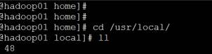
在进入
启停服务的命令
然后:都是库
测试包：
Hadoop-2.7.1 下面的/etc/
配置好之后
重启 source /etc/profile 然后 which hadoop 有问题，所以下面的单机版的配置需要配置
这里面的 继续配置
进入这个sh脚本，目的是告诉hadoop jdk的安装目录
这里面都有要配置的。比如默认的内存大小，空间的大小，都可以在以后进行调试
1.0.列子统计单词数 （单机版的）
复制一下xml ，为了一下的练习统计但此出现的次数
然后就可以进行搜索文件里面的但此出现的次数
注意当前文件夹
注意这里面的out/00 原先是没有的，不需要手动创建。 如果这个目录存在那么会报错，所以要确保目录不存在
这里wordcount 是一个类，以后需要自己写，者利用人家写好的 及时.share/hadoop/mapreduce/hadoop-mapreduce-examples-2.7.1.jar
下面的解释_SUCCESS 这里面的不进行处理，只执行 part-r -00000这个文件夹，进入part -r-00000 就有信息了
就 统计单词成功！
1.-过滤一dfs开头的单词 （第二个案例）
下面就是执行的复制的命令
$ bin/hadoop jar share/hadoop/mapreduce/hadoop-mapreduce-examples-3.0.0-alpha4.jar grep input output 'dfs[a-z.]+'
这下面的这个要注意了，
找到了一dfs开头的也就这一个
1- 案例三 基准测试
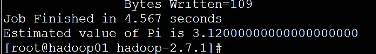
1-九宫图 案例4
*复制真个数组到上面的文件
*然后算出来
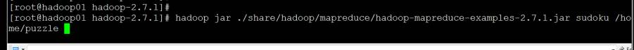
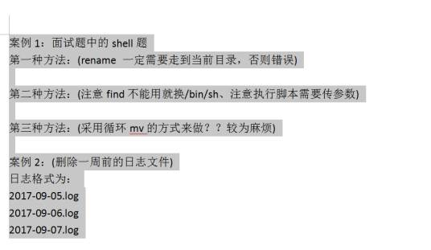
1.1配置伪分布式 ：
先查看刚才的单机版存到哪里，文件系统到了hdfs 里面，（只要沾上分布式）
开始配置四个文件


第一个配置：
第二个配置 这里应该是三但是好像有问题 千前两个就可以存取文件了，(对就是这样理解的。后面的mapreduce、跟yarn都是与业务有关的)
但是不能mapreduce，因为没有资源调度
然后伪分布式就可以了，先进性
这个就是元数据
启动之后
查看进程是否按照规划启动
查看web ui监控是否正常
Ip地址+50070
-进入文件监控系统页面
看浏览器
然后 进行查看
然后上传一个文件
进行查看就可以了
在
一般都是8020 9000
core-site.xml :当中的fs.defaultFS 的配置就是hdfs的主入口
hdfs-site.xml：
dfs.replication ：就是制定副本数：设置为3就可以了，但是伪分布式就设置为1，因为就一台机子，
dfs。Replication 的响应http://blog.csdn.net/lskyne/article/details/8898666
定创建的副本数
hadoop dfs -D dfs.replication=1 -put 70M logs/2
可以通过命令来更改已经上传的文件的副本数：
hadoop fs -setrep -R 3 /
查看当前hdfs的副本数
hadoop fsck -locations
mapred-site.xml： mapreduce.framework.name 制定mapreduce的运行框架是yarn
以上就是配置为分布式
格式化一下
Hdfs namenode -format
启动
5测试 查看进程是否按照规划启动查看web ui监控是否正常存取文件
然后可以查看
*
1.2Yarnde hdfs 伪分布式
会出错
但是没有重启命令，自己写个
所以这里关了
./sbin/stop-yarn.sh
再启动
下面的就表明杀死了进程
然后再来一个作业
注意文件夹：
免密登录介绍：
RSA(Rivest-Shamir-Adleman)密码系统。 生成、管理和转换认证密钥，包括 RSA 和 DSA 两种密钥。 介绍详情参照这个网站： http://blog.csdn.net/microcosmv/article/details/62054835 |
免密码登录
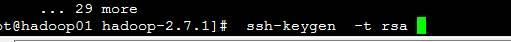
家目录下面

上面是私密钥匙，下面是公钥匙
看个私密钥匙
但还是需要密码
就可以不输入密码了
然后关掉所有进程
俊杰讲解的
免密登录 ----------------------生成密钥
免密登录——————分发密钥给客户机

*作业
|
for oldfile in $(ls ./ | grep
.log) #for oldfile in `find . -name |grep *.log `
这种情况错误，应该用双引号的方式 #for oldfile in `find . -name "*.log"` |
作业案例：
|
第一题: #带参数,输入要测试的文件目录 #!/bin/bash #$1 #rename .txt '' *txt for file in `find . -name
"*.txt"` do
mv $file ${file%.*} done 第二题: #获取一周之前的时间戳,获取以.log为后缀的文件,将文件名转成时间戳,比较,若是小于第一个,就删除此文件. #!/bin/bash filename=`date -d "1 weeks
ago" +"%Y-%m-%d"` a=`date +%s -d ${filename}` // - +%s 也可以放在最后面 echo "${a}" for i in `ls ./` do b=${i##*.} if [ $b = log ] then c=`date +%s -d $(basename $i
.log)` echo "${c}" if [ $c -le $a ] then rm -rf /test/${i} fi fi done echo "$?" */1 * * * * /home/3.sh /test/ #要测试的目录 |
Day05
Other
|
|
|
.start-build-env.sh 这个3.0的话需要 docker Yum install docker Serivice docker start |
1安全模式
安全模式 不能写数据
退出啊全模式
查看hdfs的系统上每一个节点的状况
Ssh 介绍： Secure Shell 安全外壳
传统的网络服务程序，如：ftp、pop和telnet在本质上都是不安全的，因为它们在网络上用明文传送口令和数据，别有用心的人非常容易就可以截获这些口令和数据。而且，这些服务程序的安全验证方式也是有其弱点的， 就是很容易受到“中间人”（man-in-the-middle）这种方式的攻击。所谓“中间人”的攻击方式， 就是“中间人”冒充真正的服务器接收你传给服务器的数据，然后再冒充你把数据传给真正的服务器。服务器和你之间的数据传送被“中间人”一转手做了手脚之后，就会出现很严重的问题。通过使用SSH，你可以把所有传输的数据进行加密，这样"中间人"这种攻击方式就不可能实现了，而且也能够防止DNS欺骗和IP欺骗。使用SSH，还有一个额外的好处就是传输的数据是经过压缩的，所以可以加快传输的速度。SSH有很多功能，它既可以代替Telnet，又可以为FTP、PoP、甚至为PPP提供一个安全的"通道"[1] 。
- SSH 为 Secure Shell 的缩写，由 IETF 的网络工作小组（Network Working Group）所制定；SSH 为建立在应用层和传输层基础上的安全协议。
- SSH 是目前较可靠，专为远程登录会话和其他网络服务提供安全性的协议。利用 SSH 协议可以有效防止远程管理过程中的信息泄露问题。SSH最初是UNIX系统上的一个程序，后来又迅速扩展到其他操作平台。SSH在正确使用时可弥补网络中的漏洞。SSH客户端适用于多种平台。几乎所有UNIX平台—包括HP-UX、Linux、AIX、Solaris、Digital UNIX、Irix，以及其他平台，都可运行SSH。
3hadoop集群
ResourceManager 就是老大，datanode 跟nodemanager 是成对出现的是小弟
1、规划
Hadoop01 192.168.111.123 namenode、datanode、secondarynamenode、resourceManager、nodemanager、jobhistoryserver
Hadoop02 192.168.111.124 datanode、secondarynamenode、nodemanager、
Hadoop03 192.168.111.125 datanode、nodemanager、 --resourceManager的话就应该hadoop01、hadoop02、hadoop03 <---> hadoop03
2、
jdk安装ok和ssh安装ok
3、ssh免密登录 老大不需要密码登录
hadoop02、hadoop02、hadoop03 <---> hadoop01
4、解压hadoop并配置环境变量
5、配置hadoop的配置文件
打开三台机子：
192.168.111.123 hadoop01 www.hadoop01.com
192.168.111.124 hadoop01 www.hadoop02.com
192.168.111.125 hadoop01 www.hadoop03.com
要注意公司里面都是用私钥登陆的。这里需要吧hadoop01里面的拉出来，弄到hadoop02 hadoop03上面
4.远程操控
ssh root@hadoop02 mkdir /123456 但这个命令要注意要在had目录里面

1配置hadoop 的全分布式的应用配置
·1Core-site.xml的配置
|
<configuration> <!--指定namenode的命名空间--> <property> <name>fs.defaultFS</name> <value>hdfs://hadoop01:9000</value> </property> <!--指定读写文件的缓冲大小--> <property> <name>io.file.buffer.size</name> <value>4096</value> </property>
</configuration> |
2.hdfs-site.xml 的配置
|
<configuration> <!--指定hdfs的副本数--> <property> <name>dfs.replication</name> <value>3</value> </property> <!--指定block块大写--> <property> <name>dfs.blocksize</name> <value>134217728</value> 128M </property> <!--namenode的元数据存储目录--> <property> <name>dfs.namenode.name.dir</name> <value>/home/hadoopdata/dfs/name</value> </property> <!--真正的数据内容(数据块)存储目录--> <property> <name>dfs.datanode.data.dir</name> <value>/home/hadoopdata/dfs/data</value> </property> <!--文件系统检测目录--> <property> <name>dfs.namenode.checkpoint.dir</name> <value>/home/hadoopdata/checkpoint/dfs/fsimagename</value> </property> <!--edits的检测目录--> <property> <name>dfs.namenode.checkpoint.edits.dir</name> <value>/home/hadoopdata/checkpoint/dfs/editname</value> </property> <!--是否开启文件系统权限--> <property> <name>dfs.permissions.enabled</name> <value>true</value> </property> <!--是否启用rest api访问hdfs--> <property> <name>dfs.webhdfs.enabled</name> <value>true</value> </property> <!--指定snn的web ui监控地址--> <property> <name>dfs.namenode.secondary.http-address</name> <value>hadoop02:50090</value> </property> </configuration> |
3.mapred-site.xml
|
<configuration>
<property>
<name>mapreduce.framework.name</name>
<value>yarn</value> </property> <!--指定内存--> <property>
<name>mapreduce.map.memory.mb</name>
<value>1024</value>
</property> <!--指定reduce端的最大内存--> <property>
<name>mapreduce.reduce.memory.mb</name>
<value>3072</value>
</property> <!--历史作业记录的内部通信地址--> <property> <name>mapreduce.jobhistory.address</name> <value>hadoop01:10020</value> </property>: <!--历史作业记录的web ui监控地址--> <property> <name>mapreduce.jobhistory.webapp.address</name> <value>www.hadoop01.com:19888</value> </property> </configuration> |
第四个：yarn-site.xml
|
<configuration> <!-- Site specific YARN configuration properties
-->
<property>
<name>yarn.nodemanager.aux-services</name>
<value>mapreduce_shuffle</value>
</property> <property>
<name>yarn.acl.enable</name>
<value>false</value>
</property> <!--是否开启聚合日志--> <property>
<name>yarn.log-aggregation-enable</name>
<value>false</value>
</property> <!--指定yarn的rm所启动的主机--> <property> <name>yarn.resourcemanager.hostname</name> <value>hadoop01</value> </property> <!--指定rm的内部通信地址--> <property> <name>yarn.resourcemanager.address</name> <value>hadoop01:8032</value> </property> <!-- RM中sscheduler的内部通信地址--> <property> <name>yarn.resourcemanager.scheduler.address</name> <value>hadoop01:8030</value> </property> <!--Rm的resource资源追踪--> <property> <name>yarn.resourcemanager.resource-tracker.address</name> <value>hadoop01:8031</value> </property> <!--Rm的admin资源追踪--> <property> <name>yarn.resourcemanager.admin.address</name> <value>hadoop01:8033</value> </property> <!--Rm的web ui监控地址--> <property> <name>yarn.resourcemanager.webapp.address</name> <value>192.168.123.123:8088</value> </property> </configuration> |
Resourcemanmager 在那个机器上，那个机器上就配置那个机器上的slaves
这里hadooop01里面的slaves 进行配置
|
localhost hadoop01 hadoop02 这里配的是secondarynamenode hadoop03 |
Hadoop-env.sh 的配置也就是告知java环境变量：
|
|
注意这几个配置文件，尤其是mapred (第三个应该就是这个) 这个要改下后缀名 第三个需要修改，刚解压完之后，就需要改一下后缀
6、配置hadoop的配置文件
hadoop} ./etc/hadoop/hadoop-env.sh
hadoop} ./etc/hadoop/core-site.xml
hadoop} ./etc/hadoop/hdfs-site.xml
hadoop} ./etc/hadoop/mapred-site.xml
hadoop} ./etc/hadoop/yarn-site.xml
hadoop} ./etc/hadoop/slaves
远程发送
下面的是在hadoop2当中的额 ，进入家目录
两边都可以互相加入
2.3保证没有
下面是在hadoop02执行这个命令因为需要在hadoop02当中进行
在hadoop01当中远程复制
**
其实就是让三台机子上的配置文件相同，
Leaver 不用管，只在hadoop1生效
这个吧hado01发给小弟
l Local]# src –r ./Hadoop-2.7.1/ hadoop03:/usr/local/
Zai 小弟当中刷新一下配置文件，然后看下是否配置成功
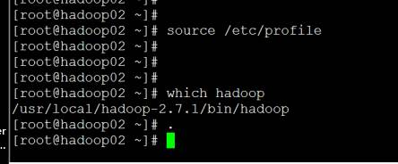
*.格式化 hdfs hadoop01上面 测试
*删除四个文件夹
如果没有格式化就进行开启的话，就会出现错误。那么怎么办，就删除四个文件夹
|
rm -rf /home/hadoopdata/dfs/name rm -rf /home/hadoopdata/dfs/data rm -rf /home/hadoopdata/checkpoint/dfs/fsimagename rm -rf /home/hadoopdata/checkpoint/dfs/editname |
就可以看元数据了 ，完事
然后启动就可以了
三种方式：
。全启动或者停止
Start-all.sh
Stop-all.sh
模块启动
Start-dfs.sh
Stop-dfs.sh
Start-yarn.sh
Stop-yarn.sh
总的开启，这个也得手动开启
单个启动
Hadoop-deamon.sh start/stop/ namenode/datanode/secondarynamenode
Yar-daemon.sh start/stop resourcemanager/nodemanager
mr-jobhistory-daemon.sh start/stop historyserver --》mr-jobhistory-daemon.sh start historyserver
然后老师启动了(老师今天这里就是模块化气动)
Start-dfs.sh
强制启动与替换
杀掉一个namenode另外一个自动开启，如果两个都死了，name就强制转换状态
hdfs haadmin -getServiceState nn1
hdfs haadmin -transitionToActive --forcemanual nn2
老师改second namenodes
但是报错了 。老师就是想吧secondnamenode 配置到hadoop02上，怎么办额
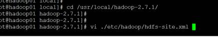
是在hadooop01上进行配置

然后在启动一下
然后hadoop01上面有namenode datenode jps
Hadoop02上
Hadoop03

然后nodemanager都再 2 3 上有了
然后在第一台机子上的 50070里面显示三个节点或者，就算成功了
节点3个那个地方点进去，刚好是三个
下面这个就是，decomissiong就是退役
Web监控地址
192.168.111.123:50070 hdfs的web ui监控
192.168.111.8088 yarn的web ui监控
Secondnamenode 也就是hadoop02的 ip+50090 snn的web ui监控
这里访问的时是second namenodes secondarynamenode 的50090的那个页面： 能看Checkpoint image(url)。能看到配置fsimage的路径
Secondnamenode 的路径就是上面的图片
访问一个页面报错了 。9888 ,打开jobhistorysever (在第一台namenode的19888端口的网站查看历史跑过的)

如果是start-all.sh 的话，在这里应该在hadoop01当中启动 mr-jobhistory-daemon.sh start historyserver 这个命令
下面附加一个jobhistory ：显示泡过的业务的网页
就行了，走到这里就ok了，如果跑数据了这里面就会有记录
文件系统搭建好了，就试试呗，接下来搭建
网页开始完成！
然后上传了一个文件
然后查看
再跑作业
|
[root@hadoop01 hadoop-2.7.1]# yarn jar ./share/hadoop/mapreduce/hadoop-mapreduce-examples-2.7.1.jar wordcount /README.txt /out/01 |
然后这个老师错了，就是因为hadoop02上面没有配置hosts映射 注意生成的这个文件实在 dhsf 文件夹下面的
注意这个需要全手动打出来
错误在日指纹机哪里骂你个
进去之后就会有好多东西，监控日志
然后再hadoo02上面
Hadooop01里面可以执行下面这个
如果是namenode起不起来怎么办
先看下日志
那一台启动不起来就去看那一台里面的日志
错误：
conntion refused
block pool initlizationed faild (重格式化)
格式化：删除元数据、删除数据内容、删除监测数据‘
删除’
Hdfs启动脚本文件：
为什么都能启动呢，进去看看
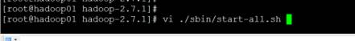
下面就是里面的
老师看了这个
这个就是-bash
那个上面这个老师说如果启动不起来就在后面加上后面的
所以总的启动文件就执行了两个模块，
所以本质上也就是杀死这些特定的 id
然后再来看看模块启动
看看封装了什么，单启动 全启动-》模块启动—》单启动
比如这个就是看传进来的参数是否是1个
case
然后看下面的namenodes
一眼找这个文件，都是从根目录中开始找的
然后用默认的slaves文件启动datanodes
然后下面就是启动secondary namenodes
下面是失败转移控制器：高可用才会用，

下面日志，也是高可用的时候用的

然后 在老师发的文档中有一个 starthadoop(这里有一个长图删了)
下面就是看人家写的starthadoop的内部代码
这里的shell看看
作业：
1， hdfs 的读入与写出 http://www.cnblogs.com/ggjucheng/archive/2012/04/23/2465793.html
2，
读文件的过程
客户端(client)用FileSystem的open()函数打开文件 DistributedFileSystem用RPC调用元数据节点，得到文件的数据块信息。 对于每一个数据块，元数据节点返回保存数据块的数据节点的地址。 DistributedFileSystem返回FSDataInputStream给客户端，用来读取数据。 客户端调用stream的read()函数开始读取数据。 DFSInputStream连接保存此文件第一个数据块的最近的数据节点。 Data从数据节点读到客户端(client) 当此数据块读取完毕时，DFSInputStream关闭和此数据节点的连接，然后连接此文件下一个数据块的最近的数据节点。 当客户端读取完毕数据的时候，调用FSDataInputStream的close函数。 在读取数据的过程中，如果客户端在与数据节点通信出现错误，则尝试连接包含此数据块的下一个数据节点。 失败的数据节点将被记录，以后不再连接。 写文件的过程
客户端调用create()来创建文件 DistributedFileSystem用RPC调用元数据节点，在文件系统的命名空间中创建一个新的文件。 元数据节点首先确定文件原来不存在，并且客户端有创建文件的权限，然后创建新文件。 DistributedFileSystem返回DFSOutputStream，客户端用于写数据。 客户端开始写入数据，DFSOutputStream将数据分成块，写入data queue。 Data queue由Data Streamer读取，并通知元数据节点分配数据节点，用来存储数据块(每块默认复制3块)。分配的数据节点放在一个pipeline里。 Data Streamer将数据块写入pipeline中的第一个数据节点。第一个数据节点将数据块发送给第二个数据节点。第二个数据节点将数据发送给第三个数据节点。 DFSOutputStream为发出去的数据块保存了ack queue，等待pipeline中的数据节点告知数据已经写入成功。 如果数据节点在写入的过程中失败： 关闭pipeline，将ack queue中的数据块放入data queue的开始。 当前的数据块在已经写入的数据节点中被元数据节点赋予新的标示，则错误节点重启后能够察觉其数据块是过时的，会被删除。 失败的数据节点从pipeline中移除，另外的数据块则写入pipeline中的另外两个数据节点。 元数据节点则被通知此数据块是复制块数不足，将来会再创建第三份备份。 当客户端结束写入数据，则调用stream的close函数。此操作将所有的数据块写入pipeline中的数据节点，并等待ack queue返回成功。最后通知元数据节点写入完毕。 转自 http://www.cnblogs.com/forfuture1978/archive/2010/03/14/1685351.html |
2.Yarn 的工作流程： http://www.aboutyun.com/thread-8035-1-1.html
|
3.运行在YARN上的应用程序主要分为两类： 4.（1）短应用程序 5.（2）长应用程序 6.短应用程序是指一定时间内（可能是秒级、分钟级或小时级，尽管天级别或者更长时间的也存在，但非常少）可运行完成并正常退出的应用程序，比如MapReduce作业、Tez DAG作业等. 7.长应用程序是指不出意外，永不终止运行的应用程序，通常是一些服务，比如Storm Service（主要包括Nimbus和Supervisor两类服务），HBase Service（包括Hmaster和RegionServer两类服务）等，而它们本身作为一个框架提供了编程接口供用户使用。 8.尽管这两类应用程序作用不同，一类直接运行数据处理程序，一类用于部署服务（服务之上再运行数据处理程序），但运行在YARN上的流程是相同的。 9.当用户向YARN中提交一个应用程序后，YARN将分两个阶段运行该应用程序： 10.第一个阶段是启动ApplicationMaster； 11.第二个阶段是由ApplicationMaster创建应用程序，为它申请资源，并监控它的整个运行过程，直到运行完成。 12.如图2-11所示，YARN的工作流程分为以下几个步骤： 13.步骤1 用户向YARN中提交应用程序，其中包括ApplicationMaster程序、启动ApplicationMaster的命令、用户程序等。 14.步骤2 ResourceManager为该应用程序分配第一个Container（这里可以理解为一种资源比如内存），并与对应的Node-Manager通信，要求它在这个Container中启动应用程序的ApplicationMaster。 15.步骤3 ApplicationMaster首先向ResourceManager注册，这样用户可以直接通过ResourceManage查看应用程序的运行状态，然后它将为各个任务申请资源，并监控它的运行状态，直到运行结束，即重复步骤4~7 16.步骤4 ApplicationMaster采用轮询的方式通过RPC{RPC（Remote Procedure
Call Protocol）——远程过程调用协议，}协议向ResourceManager申请和领取资源。 17.步骤5 一旦ApplicationMaster申请到资源后，便与对应的NodeManager通信，要求它启动任务。 18.步骤6 NodeManager为任务设置好运行环境（包括环境变量、JAR包、二进制程序等）后，将任务启动命令写到一个脚本中，并通过运行该脚本启动任务 19.步骤7 各个任务通过某个RPC协议向ApplicationMaster汇报自己的状态和进度，以让ApplicationMaster随时掌握各个任务的运行状态，从而可以在任务失败时重新启动任务。 20.在应用程序运行过程中，用户可随时通过RPC向ApplicationMaster查询应用程序的当前运行状态。 21. 22.步骤8 应用程序运行完成后，ApplicationMaster向ResourceManager注销并关闭自己。 23. 24. 25.原文链接：http://book.51cto.com/art/201312/422028.htm 26. |
Day07
CDH(Cloudera Distribution
Hadoop)
提出面试题：hadoop有几种方式，三种：
Apache发行商
1. 单机
2. 伪分布式
3. 全分布式
1开始
Hdfs的命令：
Hdfs:
|
dfs run a filesystem command on the file systems supported in Hadoop. classpath prints the classpath namenode -format format the DFS filesystem secondarynamenode run the DFS secondary namenode namenode run the DFS namenode journalnode run the DFS journalnode zkfc run the ZK Failover Controller daemon datanode run a DFS datanode dfsadmin run a DFS admin client haadmin run a DFS HA admin client fsck run a DFS filesystem checking utility balancer run a cluster balancing utility jmxget get JMX exported values from NameNode or DataNode. mover run a utility to move block replicas across storage types oiv apply the offline fsimage viewer to an fsimage oiv_legacy apply the offline fsimage viewer to an legacy fsimage oev apply the offline edits viewer to an edits file fetchdt fetch a delegation token from the NameNode getconf get config values from configuration groups get the groups which users belong to snapshotDiff diff two snapshots of a directory or diff the current directory contents with a snapshot lsSnapshottableDir list all snapshottable dirs owned by the current user Use -help to see options portmap run a portmap service nfs3 run an NFS version 3 gateway cacheadmin configure the HDFS cache crypto configure HDFS encryption zones storagepolicies list/get/set block storage policies version print the version |
可以用 dfs ;hdfs dfs ;回车就可以看命令了
Hdfs classpath 内环境jar包，
hdfs classpath –help
hdfs classpath
hdfs dfsadmin –report 端口打不开的
hdfs dfsadmin safemode -安全模式
hdfs dfsadmin -refreshNodes 刷新节点出不来可以用这个
setspacequota 引用，对那个目录进行设置,
-refreshserviceAcxl 刷新什么列表啊
-shutdownDatanode 关闭datanode节点
-fetchimage 拉去镜像
Hdfs haadmin 高可用 管理机制
Hdfs haadmin –transitionToActive nnl
-getServiceState m2
Hdfs fsck / -delete -files –blocks
n Hdfs fsck / 查看根目录下面的坏块
说的是坏块，丢失的
-fsck ; 检测修复分布式文件系统； hdfs fsck 回车 就回车线命令提示 ；corruptfileblocks 损坏的块
Hdfs balancer 平衡 （最好半夜再用）
hdfs jmxget 到处可用的namenode
omver
oiv 镜像的查看
ove 离线编辑视图
Ll ./current/ 里面的镜像
然后看镜像的命令
Hdfs ovi :查看镜像
Generate 生成
hdfs oiv -i ./current/fsimage_0000000000000000105 -o /home/fsimage.xml
hdfs storagepolicies –listPolicies
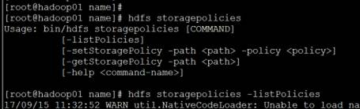
zkfc 失败自动转移
dfsadmin 运行当前hdfs的管理员的客户端
2hadoop 命令：
hadoop1 里面的命令
|
fs run a generic filesystem user client version print the version jar <jar> run a jar file note: please use "yarn jar" to launch YARN applications, not this command. checknative [-a|-h] check native hadoop and compression libraries availability distcp <srcurl> <desturl> copy file or directories recursively archive -archiveName NAME -p <parent path> <src>* <dest> create a hadoop archive classpath prints the class path needed to get the credential interact with credential providers Hadoop jar and the required libraries daemonlog get/set the log level for each daemon trace view and modify Hadoop tracing settings |
3yarn 命令
1.1 yarn rsmanager 会经常用 --管理维护yarn的时候
1.2 nodemager
1.3 sharedcachemanager 共享缓存
1.4 scmadmin
1.5 container
1.6 application 打印应用
1.7 jar
4mapred 命令 用的不多
|
1 pipes run a Pipes job 2 job manipulate MapReduce jobs 3 queue get information regarding JobQueues 4 classpath prints the class path needed for running 5 mapreduce subcommands 6 historyserver run job history servers as a standalone daemon 7 distcp <srcurl> <desturl> copy file or directories recursively 8 archive -archiveName NAME -p <parent path> <src>* <dest> create a hadoop archive 9 hsadmin job history server admin interface |
5 Hdfs dfs 命令
|
Expunge Getfacl Getmerge 合并 Setrep 副本数 -r 递归 Stat Tail 监控 Test Text Touchz 框架 Truncate 清空 Usage |
1 案例
|
一定要注意这个创建的是在 hdfs里面所以要用hdfs dfs –ls –r 这里查看 查看 Hdfs dfs –ls –r / 创建 Hdfs dfs –touchz /test/123.txt Hdfs dfs –mkdir –p /test 上传文件 Hdfs dfs -put /home/hello.java /test Hdfs dfs –ls /test 读文件 Hdfs dfs –cat /test/hello Hdfs dfs –tail /test/hello Hdfs dfs –text /test/hello 可以读取压缩文件 移动 hdfs dfs -moveFromLocal /home/hello.java /test/hello
Hdfs dfs –test -e /test |
*下午
6开始
|
hdfs dfs -setrep 2 /test/test1.java 设置副本数为两个 getmerge 合并上传 但是不适合小文件存储怎么办呢 hdfs dfs -getmerge /test /home/merge 合并，共同开发代码合并 递归下载： hdfs dfs -get /test /home/test_01 删除 hdfs dfs -rmdir /test 但是不能删除非空 删除非空 hdfs dfs -rmr /test/ |
7maven 的安装：
长用java项目构建工具：ant(打包)、maven、gradle
Maven作用：主要管理以来jar包、2打包（项目构建）、发布
依赖包的来源：
本地仓库：
私服：
中央仓库
|
1 首先到本地仓库， 2 私服 3 中央仓库（需要外网） |
|
包名 项目名 ，把包名删除 Maven help:system |
8老师的maven的安装详解
eclipse maven plugin 插件 安装 和 配置
1、maven安装配置：
1、本机安装maven maven软件的下载地址http://maven.apache.org/download.cgi
2、配置环境变量：将下载回来的包解压到任意地址，我的路径是D:\installed\apache-maven-3.3.9
3.新建环境变量MAVEN_HOME 指向D:\installed\apache-maven-3.3.9
4.在path尾部添加%MAVEN_HOME%\bin;
5.检查是否安装成功
mvn -version
6、eclipse安装maven插件（若eclipse没有自带maven插件需要安装）
-- （这里是联网自己下载的。但是这里老师给了10个G的本地jar包，自己需要手动配置怎么配置呢如下，配置完这一步就不需要，第六步这样了，10G的jar包配置的话看6.5 ）
Help – Install New
Software
在Location输入
http://m2eclipse.sonatype.org/sites/m2e
勾选Maven Integration for Eclipse，，，然后一直next即可
6.5 10G本地仓库。10个G的东西存到那？存到你的maven安装路径cnf里面xml配置文件里面的路径，如7里面的那个路径，吧10 G
jar包，放入进来就行了
7、修改maven的settings.xml文件并将自己的eclipse的maven修改成自己安装的maven。
将settings.xml中的
<localRepository>D:/installed/mavenrepository</localRepository>
我们程序所需要的jar包等会先去本地仓库找，如果找不到则会去网络上的的maven中央仓库下载，
当然默认本地仓库是放在c盘用户下.m2文件夹，这里我们可以打开.m2的settings.xml进行修改
8、查看Eclipse插件是否安装成功
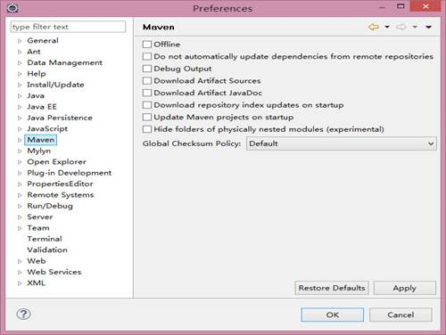
1. eclipse 配置
4.1若能看到 Maven 选项卡，说明插件安装成功。展开菜单 Maven --> Installations，点击面板右侧的 Add... 按钮.添加maven路径并选中
4.2菜单 Maven --> User Settings，点击右侧的 Browse... 按钮，在弹出来对话框中选到你 maven 安装路径下的 settings.xml 文件

5、新建一个Maven项目
步骤：New-àProjectàMavenàMaven project………..-->maven-archetype-quickstart
6、配置pom.xml，根据自己需要包的情况配置(直接复制进去，注意重复的标签，易出错)
在<name></name>和<url></url>下面配置
<!-- 基本常用变量定义 -->
<properties>
<project.build.sourceEncoding>UTF-8</project.build.sourceEncoding>
<!-- hadoop 包版本 -->
<hadoop.version>2.7.1</hadoop.version>
<!-- log4j日志文件管理包版本 -->
<slf4j.version>1.6.6</slf4j.version>
<log4j.version>1.2.9</log4j.version>
</properties>
<dependencies>
<!-- junit所依赖jar包 -->
<dependency>
<groupId>junit</groupId>
<artifactId>junit</artifactId>
<version>4.10</version>
<scope>test</scope>
</dependency>
<!-- jdk.tools 依赖jar包 -->
<dependency>
<groupId>jdk.tools</groupId>
<artifactId>jdk.tools</artifactId>
<version>1.7</version>
<scope>system</scope>
<systemPath>${JAVA_HOME}/lib/tools.jar</systemPath>
</dependency>
<!-- hadoop-common 依赖jar包 -->
<dependency>
<groupId>org.apache.hadoop</groupId>
<artifactId>hadoop-common</artifactId>
<version>${hadoop.version}</version>
<scope>provided</scope>
</dependency>
<!-- hadoop-hdfs 依赖jar包 -->
<dependency>
<groupId>org.apache.hadoop</groupId>
<artifactId>hadoop-hdfs</artifactId>
<version>${hadoop.version}</version>
<scope>provided</scope>
</dependency>
<!-- 日志文件管理包 -->
<!-- log start -->
<dependency>
<groupId>log4j</groupId>
<artifactId>log4j</artifactId>
<version>${log4j.version}</version>
</dependency>
<dependency>
<groupId>org.slf4j</groupId>
<artifactId>slf4j-api</artifactId>
<version>${slf4j.version}</version>
</dependency>
<dependency>
<groupId>org.slf4j</groupId>
<artifactId>slf4j-log4j12</artifactId>
<version>${slf4j.version}</version>
</dependency>
<!-- log end -->
</dependencies>
7、配置完了之后，保存pom.xml，会显示正在下载需要的依赖库（能不能下载还看你们的网络）
配置成功。。。。。
8、重点：http://mvnrepository.com/
所以Maven可以依赖的包都可以在这个地址查找
9开始
|
|
Day08 讲的一个操作文件上传下载的项目
关联一下源吗
Day09 周一
复习：
使用java操作hdfs的api
1. 获取configuration对象
2. 对conf对象进行设置（也可以不设置
3. 获取filesystem对象
4. 具体操作
Open（）
Create()
Exit()
isDirectory()
ifFile()
listStatus()
getStatus();
copyFromlocal()
copyTolocal()
rename();
下面都是做协议的
RPC
iCE :
1 RPC
Rpc的概念：
Rpc：的例子
1 1 集群时间同步
00:0C:29:FC:51:DD
1 手动修改 date –s “2016 -01 -05 修改每个机子的时间，让他们不一样
Vi /etc/ntp
查看是否安装了
Which ntp | 查看简称端口 ps –ef |grep ntp ; rpm –qa |grep ntp ; which ntpd
2 启动service NTP
检查ntpd是否安装
配置ntpserver vi /etc/ntp.conf
进入之后修改如下内容
restrict 192.168.111.0 netmask 255.255.255.0 nomodify notrap
ntpd states
chkconif ntpd on 开机启动ntpd
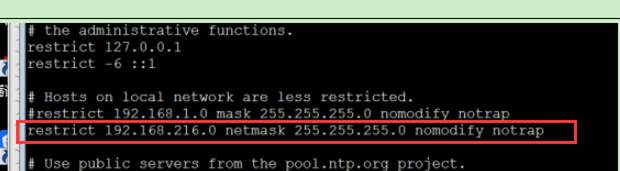
下面哪一个本机当作公共服务

3 基于实体机 7*24 不关机 用脚本在规定时间同步 达到时间同步完美”
Crontab –e
|
在02 03 上面进行同步 |
|
/var/log/ntp.log |
1.2 静态添加节点
注意需要重启服务，代价比较高，
1 再namenode 这台机器上的slaves 里面添加 要添加的hadooop04 名字，然后吧namenode里面的hadoop整个都copy到hadoop04当中
2 然后启动namenode就可以了，不需要在hadoop04当中进行服务启动
1.3 动态添加节点
|
1 配置hdfs.xml 文件
三个 04个，这种情况下切记，一定一定要在开启的状态下，才在hosts里面写hadoop04 ,这相当于老师说的自行车上放个车座，在这个过程中，hdfs整个集群开启，如果集群还没有开启的话，千万别在hosts里面写hadooop04，否则你的集群起不来，而且炸了，我曹就应为这弄了俩小时 然后再hosts里面添加一行hadoop04 然后再hadoop04当中配置好hadoop，然后启动hadoop04上面的两个服务 sbin/hadoop-daemon.sh stop datanode sbin/yarn-daemon.sh stop nodemanager 注意这里动态添加之后，新的节点没有数据 可以运用balance 进行数据平衡，hadfs .后面的命令
|
卸载：
01下面的
加上 hadoop04，把原来的hosts里面的hadoop04删了，然后 在hadoop04当中杀掉datanode节点进程就ok了
然后老师好像都删了这两个文件
好像删掉了hosts里面的04好像删了
÷ 1）需要在hdfs-site.xml配置文件中配置：
<property>
<name>dfs.hosts.exclude</name>
<value>/usr/local/Hadoop-2.7.1/etc/hadoop/hostsexclude</value>
</property>
÷ 2） exclude文件中添加需要删除的节点
÷ 3）然后执行刷新命令:hdfs dfsadmin -refreshNodes
÷ 4）根据hdfs dfsadmin -report可以查看该节点的状况
÷ 5）在节点中关闭进程:
sbin/hadoop-daemon.sh stop datanode
sbin/yarn-daemon.sh stop nodemanager
也可以直接删了
1 mapreduce 的uber模式小作业模式
2.uber模式，（注意要先开启start-yarn.sh）
注意这里，如果没有开启start-yarn.sh的话没有办法炮作业，资源都没有怎么炮作业
这里是8 小于9
这里要是true才可以，才说明进入了uber模式，因为设置的是9个一下的作业才能进入uber的
*然后这里改了
然后配置mapred-site.xml文件：如下
|
<!--是否开启uber开启小作业,就是jvm可以重用--> <property> <name>mapreduce.job.ubertask.enable</name> <value>true</value> </property> <!--最大maxmaps的个数，进入uber task 的个数在9个之内，10个的话--> <property> <name>mapreduce.job.ubertask.maxmaps</name> <value>9</value> </property> <property> <name>mapreduce.job.ubertask.maxreduces</name> <value>1</value> </property> <property> <name>mapreduce.job.ubertask.maxbytes</name> <!-- 这里设置的128MB ，但是这里面是b字节现实的--> <value>134217728</value> </property> <!--每个jvm里面可以有多少个任务，默认是1--> <property> <name>mapreduce.job.jvm.numtasks</name> <value>1</value> </property> <!--指定内存--> <property> <name>mapreduce.map.memory.mb</name> <!--3372--> <value>1024</value> </property> 这里的制定 的内存需要改一下 注意： yarn.app.mapreduce.am.resource.mb 1536 mapreduce.map.memory.mb
1024 mapreduce.reduce.memory.mb
3072(1024) yarn.app.mapreduce.am.resource.cpu-vcores
1 mapreduce.map.cpu.vcores
1 mapreduce.reduce.cpu.vcores
1 |
这里吧marpred-site.xml 进行修改并把修改后的配置文件都给了其他两台机器
然后进行重启 ./sbin/start-dfs.sh
项目
Day10 网盘项目第二天
1. 复习
2. 模拟云网盘：
3. 需求分析：
4. 用户木块：
5. 用户的注册、用户登录、用户退出
6. 文件模块：
7. 上传文件、列出文件的列表（大小人性化显示、倒序）、云网盘大小、剩余空间下载文件批量上传n/pi;iangxiazai、重命名、搜索、移动、支持在线观看，创建目录，新建文件复习
3 开始：
Hadoop 2.7.1 /mysql、java/struts2
编码测试
Struts配置web.xml 配置
|
<filter> <filter-name>struts2</filter-name> <filter-class>org.apache.struts2.dispatcher.ng.filter.StrutsPrepareAndExecuteFilter</filter-class> </filter> <filter-mapping> <filter-name>struts2</filter-name> <url-pattern>/*</url-pattern> </filter-mapping> |
Src/struts.xml
|
<?xml version="1.0"
encoding="UTF-8"?> <!DOCTYPE struts PUBLIC "-//Apache
Software Foundation//DTD Struts Configuration 2.1.7//EN" "http://struts.apache.org/dtds/struts-2.1.7.dtd">
<struts> <!-- struts编码格式 --> <constant name="struts.il8n.encoding"
value="utf-8" ></constant> <!-- struts上传文件最大限制--> <constant name="struts.multipart.maxSize"
value="1024000000000" ></constant> <!-- struts处于开发模式--> <constant name="struts.devMode"
value="true" ></constant> <!-- struts处理什么样的action--> <!-- <constant
name="struts.extenction.action" value="action"
></constant> --> <package name="test"
extends="struts-default"> </package> </struts> |
4.Strusts导包应该注意的事项：
|
Double类型的 20长度。2个小数位 在struts里面这个应该导入
StringUtils 包是在 org.appache.commons.lang 包下，不能到错了 ，就是在判断用户名密码是否为空 ， |
5.结束之后 大数据应该注意的
|
mar工作原理 mapreduce 源码 hive 数据仓库 hdfs 原理、基础 zookeper 选举、 spark stom () reduce基于内存 存储 五中 elk :大公司必定会问 java 虚拟机 、多线程的问题，怎么实现多线程 ，hashmap hashtable，几种排序算法，快拍，二分，堆排， 基础原理，数据存储（数据仓库hive） |
Day11 拦截器
1 Zoookeeper 的配置
https://archive.apache.org/dist/
“高可用性”（High Availability简称HA）
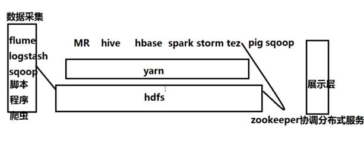
1 zookeeper的概念
zookeeper的诞生背景？
|
分布式应用缺乏协调服务 这个是启动起来的默认服务 |
Zookeeper到底是什么
|
协调分布式服务的服务 ZooKeeper is a centralized service for maintaining configuration information, naming, providing distributed synchronization, and providing group services. All of these kinds of services are used in some form or another by distributed applications. Each time they are implemented there is a lot of work that goes into fixing the bugs and race conditions that are inevitable. Because of the difficulty of implementing these kinds of services, applications initially usually skimp on them ,which make them brittle in the presence of change and difficult to manage. Even when done correctly, different implementations of these services lead to management complexity when the applications are deployed. |
3zookeeper能做什么？
|
Yarn、hbase、storm、doubble、kafka 等应用在使用zookeeper 集群管理： 管理命名空间： 管理配置信息： |
Zookeeper的架构图？
|
注意事项：zk集群的节点数量是奇数个，不推荐偶数；zk集群是否可用取决于正常的节点数>=(n+1)/2 4 1 2 Leader（监控小弟：负责数据的读写。Leader监控所有小弟上的znode节点上的事件，一旦znode节点有发生变化，leader便获取变化的数据（数据的独写是异步），然后保存到内存中，然后再持久化到本地，然后再通知其他的follower）: Follower :管理当前节点上的znode：海接受来自客户端的请求。 Client:负责读写请求 Zk仍然是主从架构，集群里面有且仅有一个leader，可以有多个follower Zk有快速选举leader机制 Zk使用原子广播协议，可以快速同步数据 一致性： 弱一致性： 强一致性： 最终一致性： 特点 最终一致性 可靠性 原子性 等待无关 顺序性 |
Zookeeper的数据模型？？
|
最大就1M, Zk和传统文件的区别： 共同点：都可以存储数据 不同： 传统文件系统目标：用于存储大量的数据 zk的数据模型：只能存销量的数据 传统文件系统有对应的文件胡目录区分：而zk的数据模型没有文件和目录之分 Zk数据模型，像一个属性文件系统，每一个叶子结点称之为一个znode节点，由唯一的path来标志一个znode，，每一个znode及是一个文件又是一个目录 |
Zookeeper的安装
|
解压并配置环境变量：
分布式队列看看
配置：
然后 source /etc/profile 刷新一下
配置： Zookepper 修改一下zoo.cfg
这里默认20 秒 2000 * 10 =20 秒 目前zookepper 三台 2888 选举端口 ， 相同也就是用到全分布式，但是如果是单机版的化，就不能都是2888了， 文字笔记如下： Vi ./conf ./conf/zoo.cfg(修改zoo——sample.cfg ./zoo.cfg)
|
zookeeper的shell
|
Zk创建znode节点有四种： 普通节点(永久)：create name=zs 普通序列化节点：create -s name
=ls 临时节点 ：create –e name=zs 临时序列化节点： 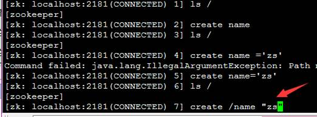 查看数据
Quit退出
删除 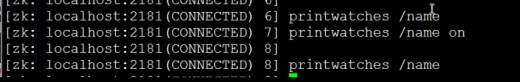
不加-server 就是默认当前机子 |
删掉数据：zookeeper
1 zookeeper的工作流程网站
|
http://cailin.iteye.com/blog/2014486/ |
|
|
Day12 HA 高可用的配
1 Zoookeeper 的配置
2 高可用重新配置高可用的时候应该删除如下四个文件
（删除、元数据、数据内容，jouranlnode的数据、zk协调服务数据）cd
元数据：/home/hadata/dfs/name/
数据内容：cd /home/hadata/dfs/data/
jouranlnode的数据：cd /home/hadata/journalnodedata/
zk协调服务数据： /home/zkdata/zookeeper/version-2/ （zookeeper里的数据删了就行）
0.1 记录
源码
老师备份就是改名字
先备份
再重新装一下：
8 zooker 的应用 ?HA
规划：
Hadoop01 192.168.111.123 namenode/datanode/journalnode/zkFailoverContronal/quroumpeermain
Hadoop02 192.168.111.124 namenode/datanode/journalnode/zkFailoverContronal/quroumpeermain
Hadoop03 192.168.111.125 /datanode/journalnode /quroumpeermain
免密登陆：
Hadoop01-àhadoop01、hadoop02、hadoop03
Hadoop02-àhadoop01、hadoop02、hadoop03
解压配置环境变量
配置配置文件：
新装的话需要配置一下jdk
1 然后配置： hdfs-site.xml
|
<configuration> <!--指定hdfs的副本数--> <property> <name>dfs.replication</name> <value>3</value> </property> <!--指定block块大写--> <property> <name>dfs.blocksize</name> <value>134217728</value> </property> <!--namenode的元数据存储目录--> <property> <name>dfs.namenode.name.dir</name> <value>/home/hadata/dfs/name</value> </property> <!--真正的数据内容(数据块)存储目录--> <property> <name>dfs.datanode.data.dir</name> <value>/home/hadata/dfs/data</value> </property> <!--是否开启文件系统权限--> <property> <name>dfs.permissions.enabled</name> <value>false</value> </property> <!--老师HA配置的,--> <!--指定命名空间,--> <property>
<name>dfs.nameservices</name> <value>qf</value> </property> <!-- 制定虚拟命名空间服务下的 唯一识别的 namenode 的id--> <property>
<name>dfs.ha.namenodes.qf</name>
<value>nn1,nn2</value> </property> <!--配置namenode nameservice制定每一个namenode的内部通信地址--> <!--这里只有两个--> <property>
<name>dfs.namenode.rpc-address.qf.nn1</name>
<value>hadoop01:9000</value> </property> <property>
<name>dfs.namenode.rpc-address.qf.nn2</name> <value>
hadoop02:90000</value> </property> <!--这里只有两个制定每一个namenode的web ui--> <property>
<name>dfs.namenode.http-address.qf.nn1</name> <value>
hadoop01:50070</value> </property> <property>
<name>dfs.namenode.http-address.qf.nn2</name> <value>
hadoop02:50070</value> </property> <!--配置 日志分享--> <property>
<name>dfs.namenode.shared.edits.dir</name>
<value>qjournal://hadoop01:8485;hadoop02:8485;hadoop03:8485/qf</value> </property> <!-- 配置的j，制定由哪一个雷来进行namenode的激活（active）--> <property>
<name>dfs.client.failover.proxy.provider.qf</name> <value>org.apache.hadoop.hdfs.server.namenode.ha.ConfiguredFailoverProxyProvider</value> </property> <!--是否进行失败自动切换--> <property>
<name>dfs.ha.automatic-failover.enabled</name> <value>true</value> </property> <!--那个用户启动，就配置哪一个程序 ,防止namenode脑力额(同时出现两个active)--> <property>
<name>dfs.ha.fencing.methods</name>
<value>sshfence</value> </property> <property>
<name>dfs.ha.fencing.ssh.private-key-files</name>
<value>/root/.ssh/id_rsa</value> </property> <!--指定超时时间--> <property>
<name>dfs.ha.fencing.ssh.connect-timeout</name>
<value>30000</value> </property> </property> <!--制定journalnode的edites和本地状态的存储目录 --> <property>
<name>dfs.journalnode.edits.dir</name>
<value>/home/hadata/journalnodedata</value> </property> </configuration> |
2 core-site.xml
|
<!--指定命名空间的总入口地址--> <property>
<name>fs.defaultFS</name>
<value>hdfs://qf</value> </property> <!--指定读写文件的缓冲大小--> <property>
<name>io.file.buffer.size</name> <value>4096</value> </property> <!--指定zk的集群地址--> <property>
<name>ha.zookeeper.quorum</name>
<value>hadoop01:2181,hadoop02:2181,hadoop03:2181</value> </property> |
4 然后配置slaves 里面添加
|
hadoop01 hadoop02 hadoop03 |
5 分发给小弟 mapreduce 与yarn 都不需要给小弟
|
都分发一遍 |
Ssh-kengen –t rea ssh-copy-id hadoop01 每一个机都配置一下免密登陆然后发给小弟们
3 按照如下步骤开始启动;
5.1 启动hdfs
的HA集群时候必须先启动zk集群，
对于刚搭建HA执行以下步骤--也可以对已经有的数据上搭建HA
1 先开启zkServer.sh start ，然后在开启 hadoop-daemon.sh start journalnode
2找一台namenode的节点进行格式化 hdfs namenode –format
启动刚才格式化的namenode 机器的namenode服务
3在为格式话的namenode 拉上去已经格式化和启动namenode服务
如下：注意在第二个namenode上面
Bootstrapstandby
然后第二台上面需要有如下的文件
4 格式化zkfc
zkCli.sh
格式化之前需要只留下这个文件
然后开始格式化
然后看看有没有如下的文件
有就对了
再稍微看下qf里面有东西没
5 启动hadoop01里面的 start-dfs.sh
要求第一台上面有这几个服务
第一台
但是我的配置中只有以下几个

第二胎
第三台
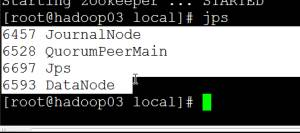
有这些服务就行了
然后去 50070去查看。要有三个节点，有一个stand的那个
然后去hadoop01里面看看
然后再hadoop01里面杀死namenode （模拟namenode崩溃）
然后去hadoop03里面读取数据, 可以读取数据，hado，可以读取，然后再回到hadoop01进行开启namenode
然后在hadoop02里面杀死namenode ，照样可以在namenode （hadoop01）上面正常查数据
2 HA YARN老师带领这搭配置
Yarn的规划 在namenode 1 2 上面再多连个如下节点。在hadoop03里面加上一个datanode就行了
1然后再hadoop01里面 配置 yarn-site.xml
再官网上面的如下位置
http://hadoop.apache.org/docs/r3.0.0-alpha4/hadoop-yarn/hadoop-yarn-site/ResourceManagerHA.html
|
<!--是否启动yarn的rm的HA功能，默认关闭--> <property> <name>yarn.resourcemanager.ha.enabled</name> <value>true</value> </property> <!--是否开启失败自动转移,默认不需要配置，但是手动的话需要进行手动配置， --> <property> <name>yarn.resourcemanager.ha.automatic-failover.enabled</name> <value>ture</value> </property> <!--yarn的rm的HA的服务ID ，制定rm的HA的集群--> <property> <name>yarn.resourcemanager.cluster-id</name> <value>qfyarn</value> </property> <!--yarn的rm的HA的服务ids的逻辑rmid的列表(qf)是没有的官网的rm-ids不能改，--> <property> <name>yarn.resourcemanager.ha.rm-ids(qf)</name> <value>rm1,rm2</value> </property> <!--为逻辑rm1配置所启动的主机，制定rm所启动的主机--> <property> <name>yarn.resourcemanager.hostname.rm1</name> <value>hadoop01</value> </property> <!--为逻辑rm2配置所启动的主机--> <property> <name>yarn.resourcemanager.hostname.rm2</name> <value>hadoop02</value> </property> <!--为逻辑rm1配置web ui监控端口，制定rm1对应的web ui地址--> <property> <name>yarn.resourcemanager.webapp.address.rm1</name> <value>hadoop01:8088</value> </property> <!--为逻辑rm2配置web ui监控端口--> <property> <name>yarn.resourcemanager.webapp.address.rm2</name> <value>hadoop02:8088</value> </property> <!--配置zk集群地址--> <property> <name>yarn.resourcemanager.zk-address</name> <value>hadoop01:2181,hadoop02:2181,hadoop03:2181</value> </property> <property> <name>yarn.nodemanager.aux-services</name> <value>mapreduce_shuffle</value> </property> </configuration> |
但是必须要加上以前的配置，（yarn-site.xml）
但是还不行，接下来配置mapreduce-site.xml 的配置文文件：
3 HA---mapreduce-site.xml 配置
|
<!--指定mapreduce运行框架名称为yarn--> <property> <name>mapreduce.framework.name</name> <value>yarn</value> </property> <!--指定历史服务的内部通信地址--> <property> <name>mapreduce.jobhistory.address</name> <value>hadoop01:10020</value> </property> <!--指定历史服务的web ui监控地址--> <property> <name>mapreduce.jobhistory.webapp.address</name> <value>hadoop01:19888</value> </property> |
|
|
配置完之后，分发给小弟，（hadoop01-02,03）
然后启动
但是hadoop02也需要进行手动启动，如下：
然后老师这里没有起来，如下是没有起来
Yarn没有起来，进入日志进行观看

再运行一下，让其写入日志，在进到日志里面去看，然后就找到错误
这里不能改成qfyarn
然后再起来每01 02 的yarn
好了之后就开始跑业务
看下能不能跑
然后有数据就没有问题了
然后把hadoop01 的resource给杀掉，去hadoop02里面去跑业务
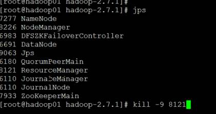
然后02就可以看了，体现的就是高可用
看看能不跑起来。
然后yarn的高可用就完了 OK!
4 HA 老师带领这搭配置
老师的：
第一次发的 老师把有关secondnamenode 的删了，有俩，然后下面这个是剩余的
下午老师关了两个地方 最后老师又换回来了，不需要去修改了还是保持true
一个hdfs-site.xml 这里面可以注释也可以直接修改
第二个是 yarn,这里面不可以注释掉，只可以修改
老师注释完之后有分别分配为了小弟们配置文件
查看健康状态：

查看状态
这个是查看yarn也就是resourcemanager的状态的，如果你把nn1的yar给关了，也就是直接杀死，（开启命令是:
）
状态为如下才是ok
手动激活（强制激活）
手动的
将自动注释重启即可
Namenode的手动没有ZKFC的服务
Ha的管理名命令：
经常遇到的问题：
1、 连接拒绝。映射、防火墙、主机名
2、 快初始化失败。可以修改id、可以格式化数据
3、 已经有数据在格式化的时候，（删除、元数据、数据内容，jouranlnode的数据、zk协调服务数据）
1 MapReduce (分布式并行离线计算框架)
Java decompiler
吧写好的带着mr的打包，拉倒home下面，下面这个不行 因为没有加包名-
加上包名就行了
屏蔽这两个之后不会报错
Map 阶段 reduce阶段只定义一个就行,typemissmatch
Day13 Mapreduce 的第二天
1 复习
Mapreduce是什么？ 分布式并行的离线计算框架
执行阶段：inputàmapàshuffle-àreduce-àoutput
Mr的整个过程中的数据结构为：key-value
Mr的默认输入个格式：TextInputFormat
Mr被抽象成两个函数:map（ ） reduce()
Mr中的job：用户提交的请求，称之为作业。
Task：一个job可以拆分成多个task，分为两类mapTast和ReduceTask
Mar核心思想：分而治之（分治算法）
默认mapper和reducer都是四个参数：分别是各个阶段的输入和输出的key-value类型。
Map阶段的输出key-value类型一定要和reduce阶段的输入和输出类型一模一样
map阶段的输入key可以使longWritable和object.
reduce阶段的输出没有限制。
分片中的每一行元数据数据需要调用一次map（）方法
Reduce拉去map阶段的数据之后会讲相同的key合并到一个容器中，将每一个reduce阶段中的每一个key将会调用一次reduce函数， 最终输出的数据将会按照key（文本类型进行字段排序）
数据源 |
awk -F “” ‘BEGIN{} END{}’ /数据路径
老师测试的时/home/input/flow里面的数据
BEGIN 相当于mapreduce当中的set只执行一次 END 在结尾之后只是执行一次
过滤：(这种方法是处理几百MB或者几百GB的数据量 )
|
Awk -F “\t” ‘BEGIN{print “日期 \t uv \t pv \t payv”} {if($5>=5000 && &6 >=5000 $7 >=5000) print{$1,$5,$6,$7}}’ /home/inputdata/flow |
計算flow 里面的
下午：
|
// 总和 awk -F
"\t" 'BEGIN{print "日期 \t
全站pv "} {print $1,($5+$6+$7)}' /home/inputdata/flow //分段的天数
|
AWK的的一个列子（注意不能有头部中文）
|
awk -F "\t" ' BEGIN{ print "分段 \t 天数" g13 = 0 g34 = 0 g45 = 0 g56 = 0 g67 = 0 g78 = 0 g8up = 0 } { if(($5+$6+$7)<30000){ g13 ++ }else if(($5+$6+$7)>=30000
&& ($5+$6+$7)<=40000){ g34 ++ } else if(($5+$6+$7)>=40000
&& ($5+$6+$7)<=50000){ g45 ++ }else if(($5+$6+$7)>=50000
&& ($5+$6+$7)<=60000){ g56 ++ }else if(($5+$6+$7)>=60000
&& ($5+$6+$7)<=70000){ g67 ++ }else if(($5+$6+$7)>=70000
&& ($5+$6+$7)<=80000){ g78 ++ }else { g8up ++ } } END{ print "1-3",g13 ,(g13/NR)*100"%" print "3-4",g34 ,(g34/NR)*100"%" print "4-5",g45 ,(g45/NR)*100"%" print "5-6",g56 ,(g56/NR)*100"%" print "6-7",g67 ,(g67/NR)*100"%" print "7-8",g78 ,(g78/NR)*100"%" print "8up",g8up ,(g8up/NR)*100"%" } ' /home/Myinputdata/fllow --- > print "1-3",g13 ,(g13/NR)*100"%" > print "3-4",g34 ,(g34/NR)*100"%" > print "4-5",g45 ,(g45/NR)*100"%" > print "5-6",g56 ,(g56/NR)*100"%" > print "6-7",g67 ,(g67/NR)*100"%" > print "7-8",g78 ,(g78/NR)*100"%" > print "8up",g8up ,(g8up/NR)*100"%" > } > ' /home/Myinputdata/fllow |
1 块和片的关系：
Block块：128M一块。

片（split）：快的逻辑组织。 默认一个块是一个片，但是有10%的冗余，0M的文件也会切片
局和日志：yar-default.xml
这里面一个是false ，默认是不可用，还有就是时间好像（貌似是看局和日志的时长））
聚合日志：先写配置文件：
1 Yarn-site.xm聚合日志：
|
<!--****配置聚合日志*******--> <!--是否开启聚合日志--> <property> <name>yarn.log-aggregation-enable</name> <value>true</value> </property> <!--指定聚合日志存储时间--> <property> <name>yarn.log-aggregation.retain-seconds</name> <value>86400</value> </property> <!--聚合日志检测时间间隔--> <property> <name>yarn.log-aggregation.retain-check-interval-seconds</name> <value>3600</value> </property> <!--指定userlog的保存时长--> <property> <name>yarn.nodemanager.log.retain-seconds</name> <value>10800</value> </property> <!--聚合日志所保存的目录--> <property> <name>yarn.nodemanager.remote-app-log-dir</name> <value>/yarn/logs</value> </property> |
*停止服务，先停止namenode1 上面的all. ：Stop-all.sh
*停止namenode2上的resourcemanager服务：yarn-daemon.sh stop resourcemanager
*然后回来停止namenode1上面的 jobhistory: mr-jobhistory-daemon.sh stop historyserver
* 然後記住需要繫那個配置文件发给小弟们： scp -r ./etc/hadoop/yarn-site.xml hadoop02:/usr/local/hadoop-2.7.1/etc/hadoop/yarn-site.xml
*然后启动所有在namenode1 上面 ： start-all.sh
*然后namenode2 上面开启:resourcemanager: yarn-daemon.sh start resourcemanager
Day14 shuffer
1. 复习
Shuffle--------复习
统计、百分比、均值、awk
Awk -F “” ‘BEGIN{} {partten} END{}’ /处理数据
Shuffle：描述Map阶段的输出到Reduce阶段的输入。
分片：block的一个逻辑组织。 注意10%冗余，空文件也会分片，不可切割的文件也会作为一个分片。
inputSplit的默认实现FileSplit，fileSplit将会被进行RecordReader
分区：决定map阶段的输出交由reduce处理。
自定义分区：
1、分区需需要继承Partitioer<key,value> ,其中的key-value ，需要和map阶段的输出相同
2、实现getPartitoin(key,value,numPartitions)该方法，只能返回int类型
3、分区数和reduce个数相同
4、默认分区hashPartition
下午：
Ecplise连接hadoop集群